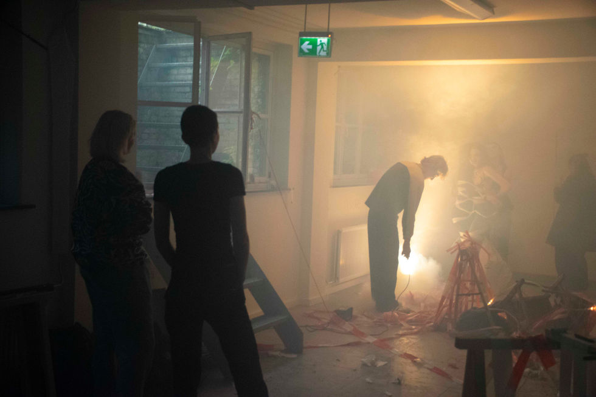
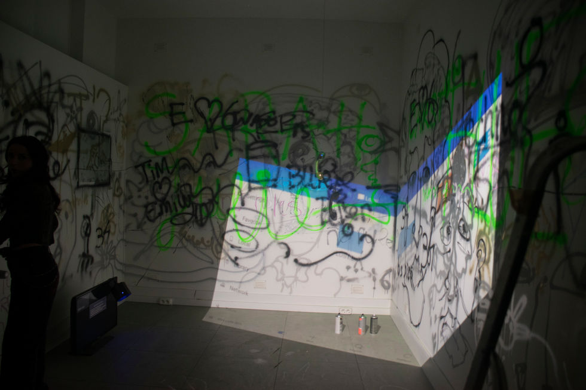
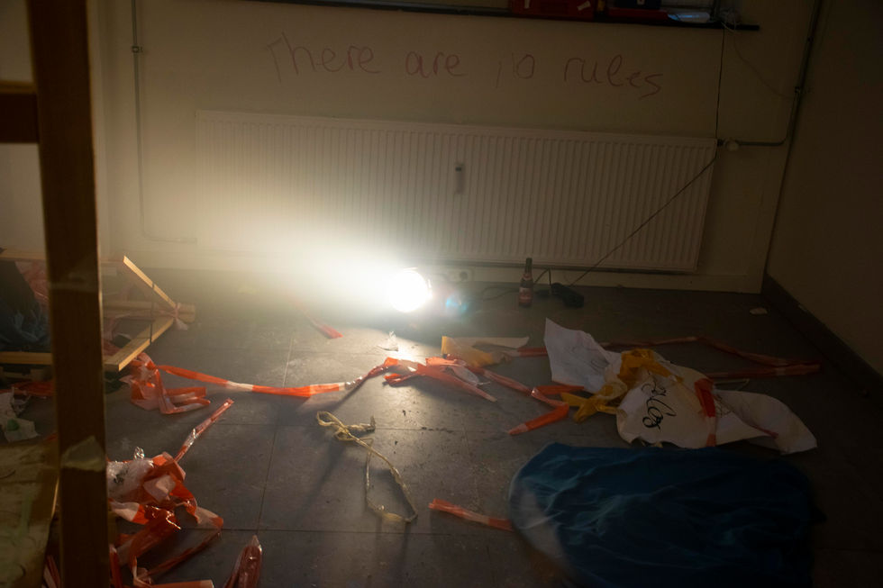
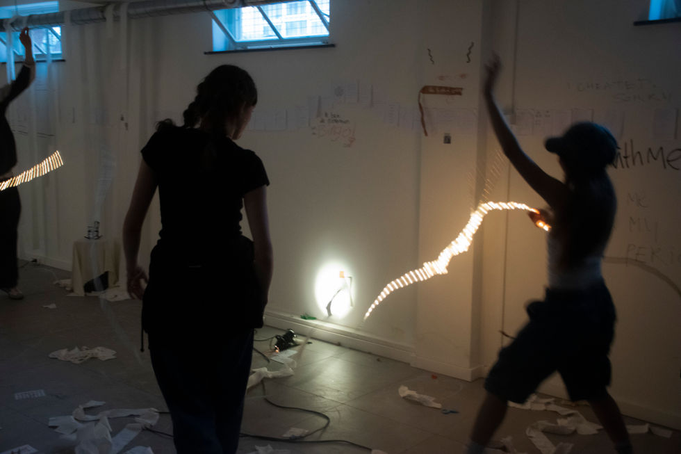
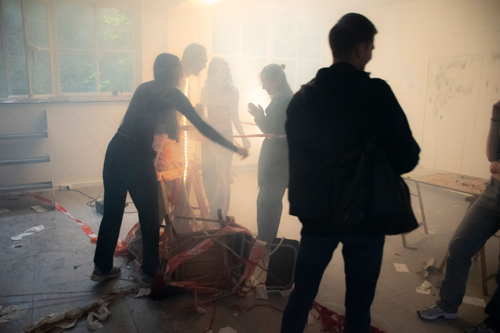
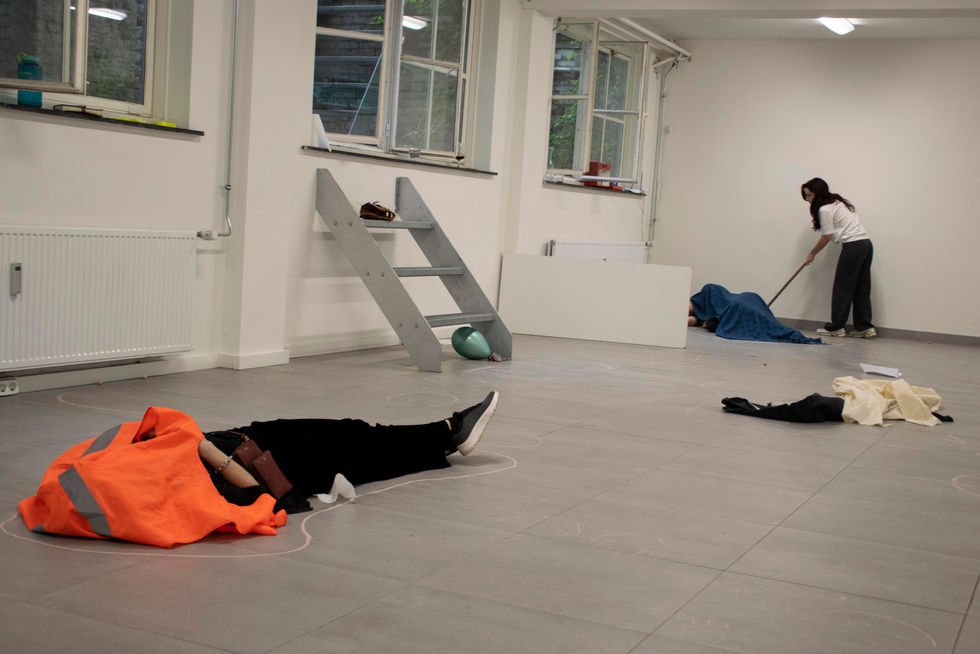
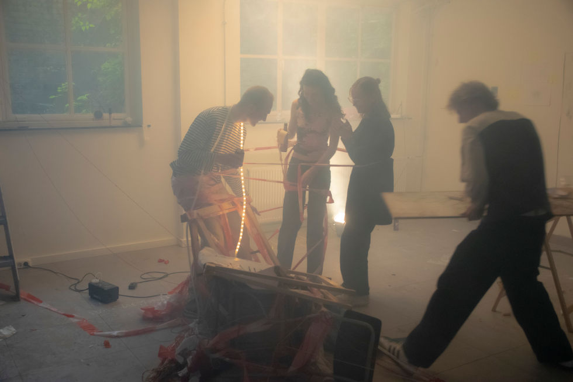

bingo machine
In an era where our connection to the world is increasingly mediated and fragmented, how can we regain a sense of resonance with our surroundings and with each other? This question, central to Hartmut Rosa's critique of modern life, inspired a recent collaboration within the research studio Art & Architecture, organized by the Maastricht Institute of Arts and the Maastricht Academy of Architecture.
Omid Kheirabadi was invited to lead a series of performance sessions with 12 students from the BA Fine Arts and BA Architecture programs, exploring how to cultivate deeper, more meaningful interactions with the physical world. Over three weeks, this collective creative process, guided by Rosa's theories on resonance, culminated in a public Happening on May 21st at B32 Artspace in Maastricht. The event, which marked Omid's first experiment with the Happening format, offered an immersive experience for visitors, blurring the lines between performers and audience.
A key element of the Happening was its soundtrack, created by the students under the guidance of Maastricht-based musician and artist Paul Devens. This collaborative soundscape added a resonant layer to the performance, enhancing the group's exploration of how we can reclaim a sense of connection in a disenchanted world. The Happening served as a public moment of sharing, inviting the audience to engage with the group's journey and the resonant spaces they crafted together.






